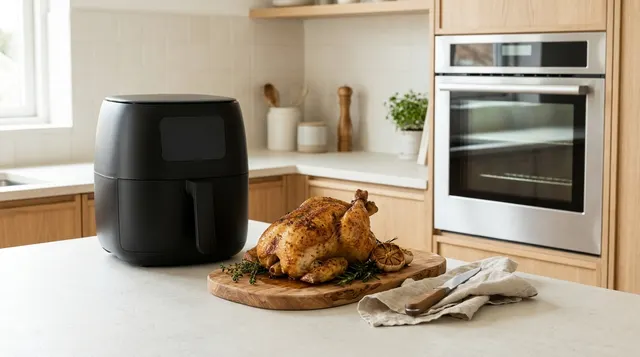
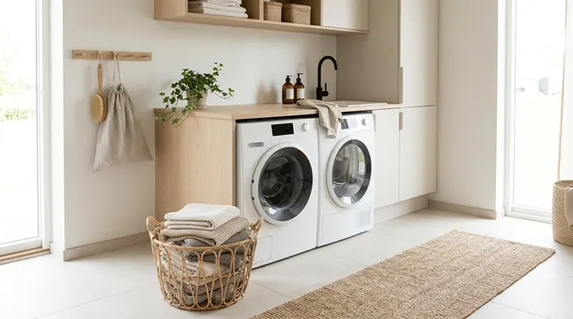
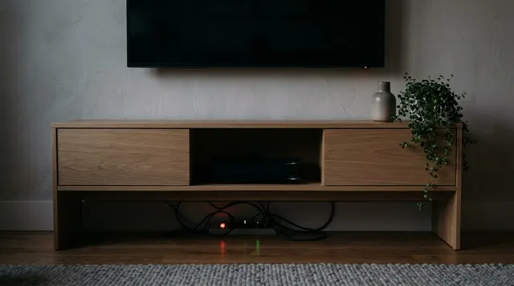
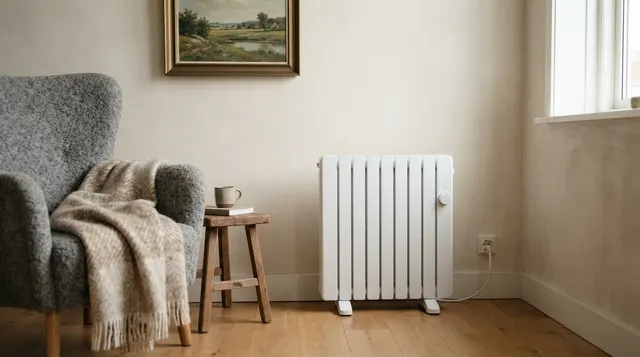

Blog: hvad koster strømmen i hverdagen?
Korte artikler, der regner ud, hvad ting i hjemmet koster i strøm. Alle tal har kilde, og priserne er regnet med dagens elpris.
Emil Rostgaard Clausen, stifter og redaktør
Nyeste indlæg
- Hvad koster julelys i strøm?Julelys koster mindre, end de fleste tror, hvis det er LED. Gamle lyskæder med glødepærer bruger næsten seks gange så meget. Her er regnestykket, så du kan se, hvad dit eget julelys koster.

Airfryer eller ovn: hvad er billigst i strøm?Airfryeren bruger mindre strøm end ovnen, men forskellen er mindre, end mange tror. Vi har regnet en test fra Forbrugerrådet Tænk om til dagens elpris.
Hvad koster en vask og en tørring i strøm?En vask koster et par kroner i strøm. Tørretumbleren kan koste tre gange så meget, hvis den er gammel. Her er priserne efter energimærke.
Standby-forbrug: hvad koster det om året?Nye apparater bruger næsten ingenting på standby. De gamle kan til gengæld koste flere hundrede kroner om året. Her kan du se, hvad der er værd at slukke for.
Hvad koster en elradiator i strøm?En elradiator er billig at købe og dyr at bruge. Her kan du se, hvad den koster pr. time, dag og måned, og hvornår den alligevel giver mening.
Mangler du et emne? Skriv til kontakt@skiftelaftale.dk.